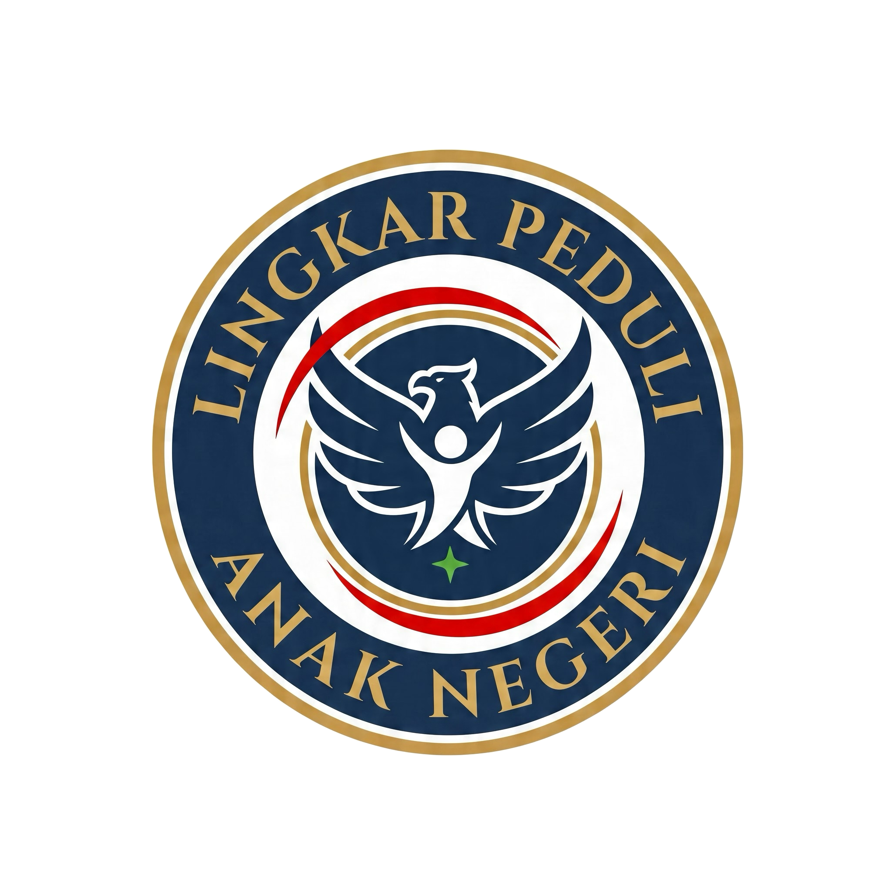

🦅
Elang Garuda
Digambarkan dalam postur merangkul dan melindungi — bukan agresif. Melambangkan kekuatan yang mengayomi seluruh rakyat Indonesia.
Tentang Kami
Setiap elemen dalam logo LKP mengandung makna mendalam tentang kepedulian, persatuan, dan harapan untuk anak negeri.

Breakdown makna tiap komponen logo
Digambarkan dalam postur merangkul dan melindungi — bukan agresif. Melambangkan kekuatan yang mengayomi seluruh rakyat Indonesia.
Simbol persatuan dan sinergi — bahwa LKP bergerak bersama, tanpa sekat, dalam satu ikatan kepedulian.
Tangan terentang ke atas, tumbuh dari tunas bintang. Melambangkan harapan, masa depan, dan generasi penerus bangsa.
Dua garis merah di sisi lingkaran melambangkan semangat, keberanian, dan cinta tanah air yang terus bergerak.
Warna-warna yang membentuk identitas visual LKP
#0B2545
Profesionalisme, kepercayaan, stabilitas, dan wibawa.
#C9A24B
Kualitas, kehormatan, dan nilai tinggi.
#C0392B
Semangat, keberanian, energi, dan cinta tanah air.
#2E7D32
Pertumbuhan, harapan, dan kehidupan — pada elemen tunas bintang.